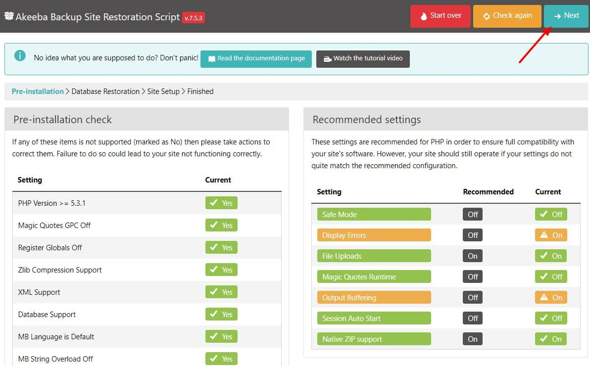
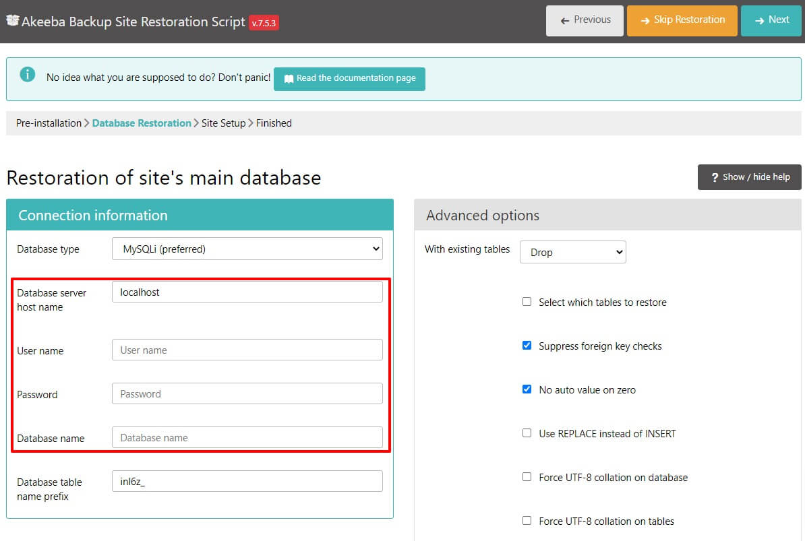
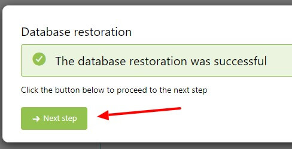
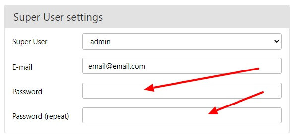
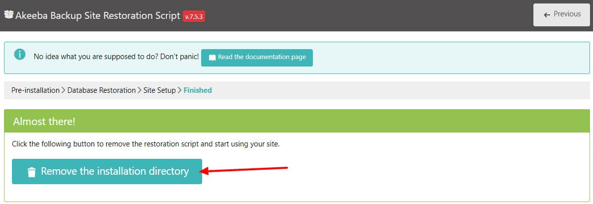
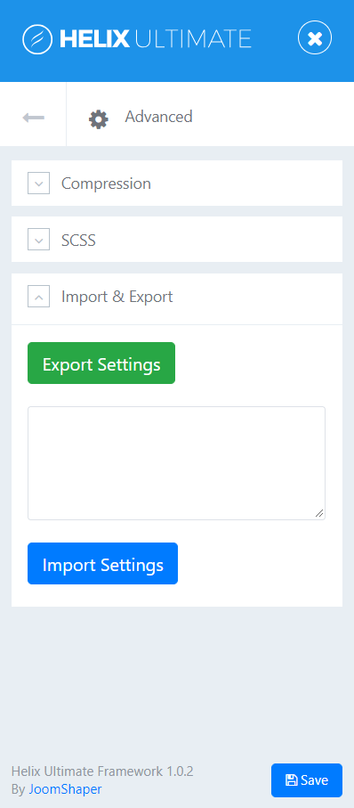
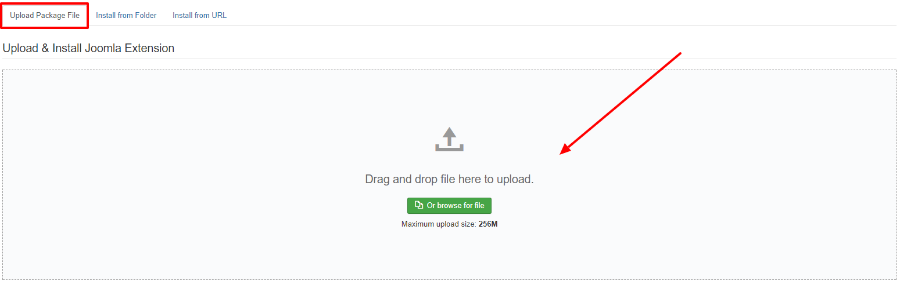
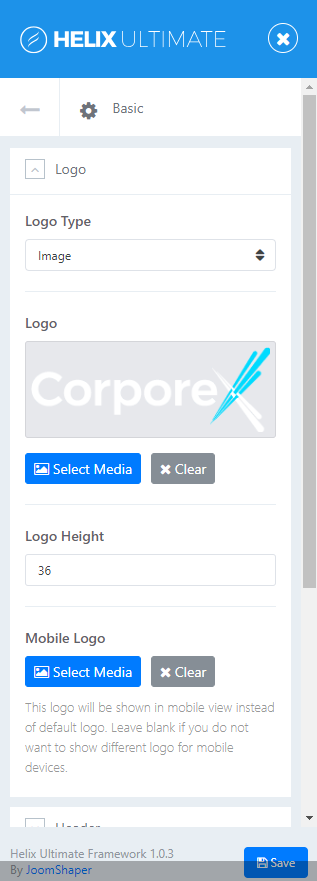
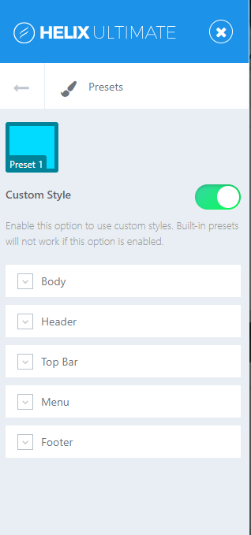

In this document you will find the latest information on how to install, manage and update your template, as well as create content, install plugins, modules and component etc.
Once you purchase our Joomla Template you can download the complete package. After you UnZIP the package you will find all the template files in it.
We always recommend installing a Quickstrat Pack first to trial and understand the template more effectively. It must be installed as new, and not over an existing Joomla install. The installation version we provide for all our clients is accomplished and swift. The procedure is simple and easy, containing all the extensions used in the template, their corresponding settings, contents, positions of modules and menus.
After downloading the bundle pack follow these steps to install the quickstart.
Step 1: Unzip the downloaded package and you will get a zip file which name is like itl_TemplateName_quickstart(recommended).zip
Step 2: Open your browser at the directory you are going to perform the installation and you will see installation screen.
Step 3: Click Next form top right corner.

Step 4: On Seconde screen fill Database Name, Database Username and Database password with corrent information and click Next

Step 5: After Database Restoration Process complete you will get a message and click on Next Step

Step 6: After that put admin password twice and click Next

Step 7: If everything goes well you will get a message to Remove the installation directory. Just click on that button and check your site front-end.

As we mentioned before that this template is built with Helix Framework you need to import all the template settings. In the bundle pack you will also get a file named itl_template_settings.json. Open that file in your editor and copy all the code in there. Then go to Extensions > Templates > Styles > itl_TemplateName - Default. Inside of the template options page click on Advanced tab. Paste all the code in the Settins Import/Export area and Click on Import Settings.

All the extensions used in this template is bundled in required_extensions_UNZIP_FIRST.zip zip file. First unzip the file on your PC. Inside required_extensions directory you will find all the extensions in there.
Login to your administrator area and go to Extensions > Manage > Install. Then locate the extensions or you can drag and drop the file one by one in this uploading area. Joomla will install it of it's own.

Go to Extensions > Templates > Styles > itl_TemplateName - Default. Inside of the template options page click on Basic tab. From LOGO section you can change the logo.

Go to Extensions > Templates > Styles > itl_TemplateName - Default. Inside of the template options page click on Presets tab. From STYLING OPTIONS section you can change the color.

Go to Extensions > Templates > Styles > itl_TemplateName - Default. Inside of the template options page click on Basic tab. From CONTACT INFORMATION section you can change the logo.
Thanks to Mathew Tamin who make the tutorials of SP Page Builder and cover all it's addon. Just go through with these tutorial and you will be able to build your site with ease.
# Social Icon
Go to Extensions > Templates > Styles > itl_TemplateName - Default. Inside of the template options page click on Basic tab. From SOCIAL ICONS section you can change the logo.